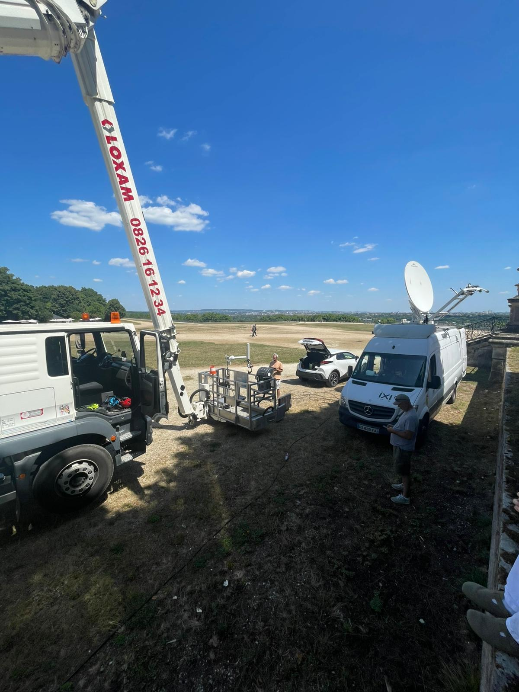
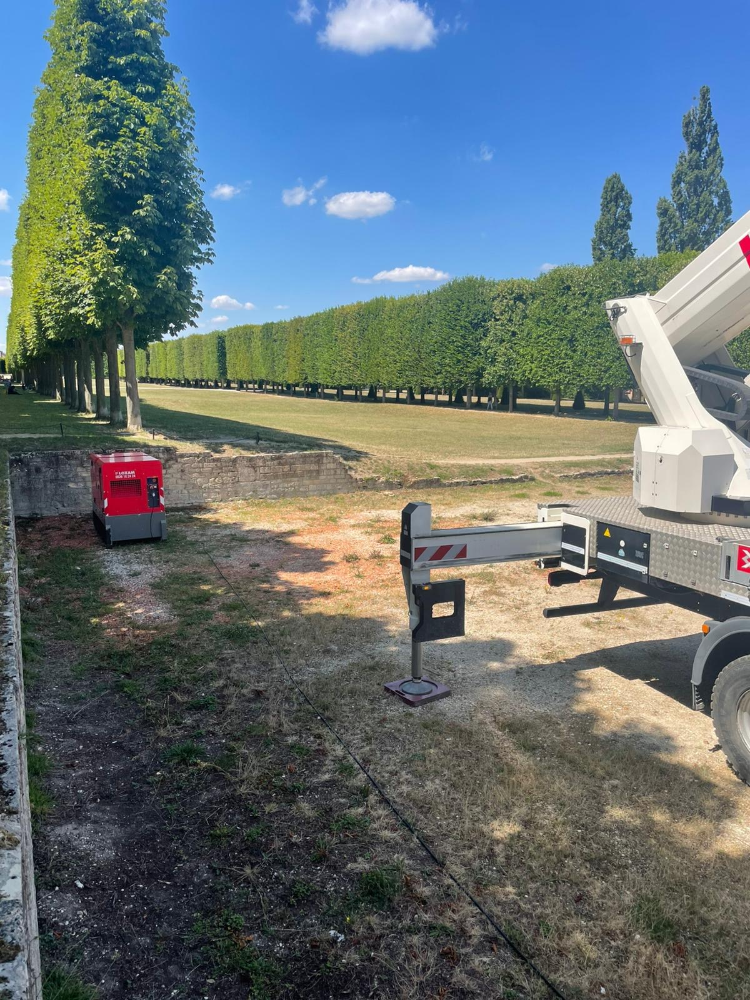
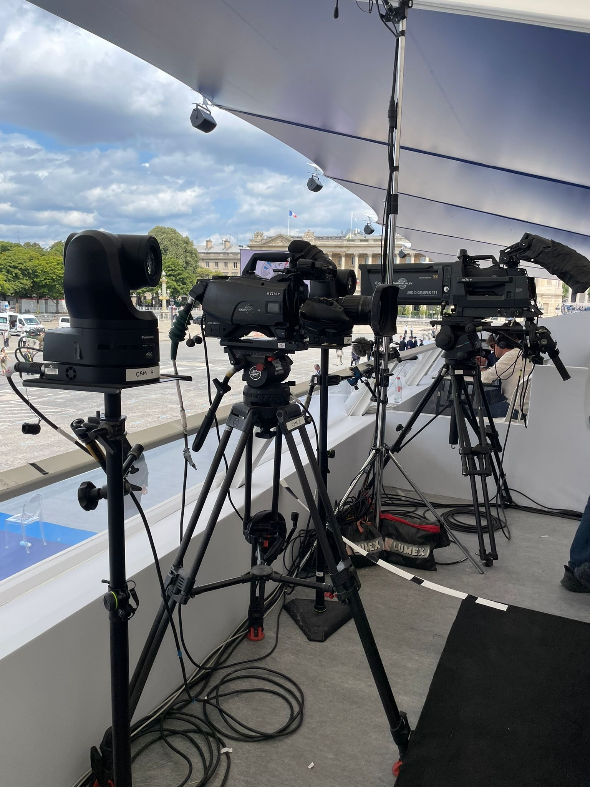
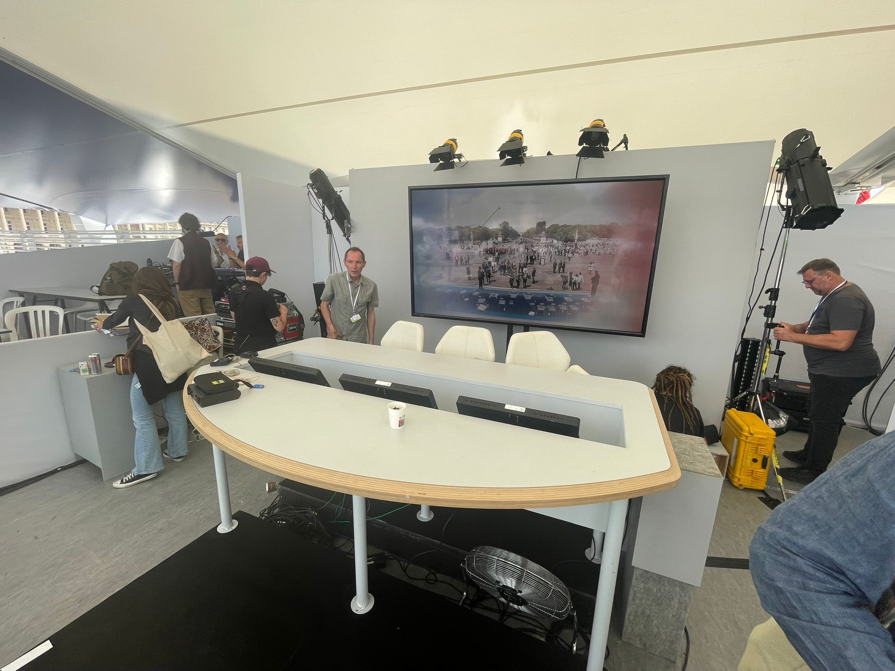

PRODUCTION TÉLÉVISUELLE · ÉVÉNEMENTIEL
14 juillet 2025
Le projet
Pour la retransmission télévisée du défilé du 14 juillet, France Télévisions met en place un dispositif permettant notamment de produire des images aériennes des avions. Sa préparation nécessite des repérages, la coordination des installations et l’organisation technique du dispositif, avant son exploitation le jour de l’événement depuis le car régie.
Ma contribution
J’ai contribué à la préparation technique du dispositif destiné à capter les images aériennes du défilé. En amont, j’ai planifié les repérages et pris contact avec le château de Saint-Germain-en-Laye afin de coordonner l’installation d’une nacelle, d’une antenne satellite et d’un groupe électrogène.
J’ai pris en charge de manière autonome la préparation et l’installation de la nacelle sur le site retenu. J’ai coordonné les éléments nécessaires afin que le dispositif puisse être opérationnel dans les conditions prévues.
Le jour du défilé, j’ai suivi la retransmission depuis le car régie, aux côtés de l’équipe de production.
Le dispositif technique



